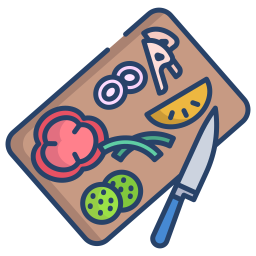

<ion-content>
  <div class="contenedor-login">
    <div class="seccion-header">
      <div class="contenedor-logo">
        
        <h1 class="nombre-app">Sabores & Recetas</h1>
        <p class="eslogan-app">Descubre el chef que llevas dentro</p>
      </div>
    </div>

    <form (submit)="iniciarSesion()" class="form-login">
      <ion-item class="input-personalizado">
        <ion-icon name="mail-outline" slot="start"></ion-icon>
        <ion-input
          type="email"
          [(ngModel)]="correo"
          name="correo"
          placeholder="tu.email@ejemplo.com"
          required
        ></ion-input>
      </ion-item>

      <ion-item class="input-personalizado ion-margin-top">
        <ion-icon name="lock-closed-outline" slot="start"></ion-icon>
        <ion-input
          type="password"
          [(ngModel)]="contrasena"
          name="contrasena"
          placeholder="Ingresa tu contraseña"
          required
        >
          <ion-input-password-toggle slot="end"></ion-input-password-toggle>
        </ion-input>
      </ion-item>

      <div class="forgot-password">
        <a (click)="irARecuperarContrasena()">¿Olvidaste tu contraseña?</a>
      </div>

      <ion-button expand="block" type="submit" class="btn-login">
        <ion-icon name="restaurant-outline" slot="start"></ion-icon>
        Iniciar sesión
      </ion-button>
    </form>

    <div class="seccion-registro">
      <span>¿No tienes cuenta?</span>
      <ion-button type="button" expand="block" fill="outline" (click)="irARegistro()">
        <ion-icon name="person-add-outline" slot="start"></ion-icon>
        Crear cuenta
      </ion-button>
    </div>

    <div class="seccion-caracteristicas">
      <h3>Desata tu creatividad culinaria</h3>
      <div class="grid-caracteristicas">
        <div class="item-caracteristica">
          <ion-icon name="book-outline"></ion-icon>
          <span>+1000 recetas</span>
        </div>
        <div class="item-caracteristica">
          <ion-icon name="heart-outline"></ion-icon>
          <span>Favoritos</span>
        </div>
        <div class="item-caracteristica">
          <ion-icon name="people-outline"></ion-icon>
          <span>Comunidad</span>
        </div>
      </div>
    </div>

    <div class="info-version">
      <span>Versión 1.0.0</span>
    </div>
  </div>

  <ion-toast
    [isOpen]="toastAbierto"
    message="Credenciales incorrectas. Inténtalo de nuevo."
    [duration]="5000"
    (didDismiss)="toastAbierto = false"
  ></ion-toast>
</ion-content>
